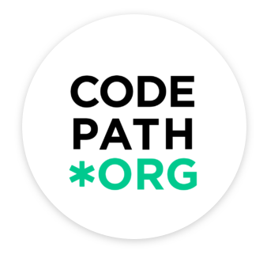
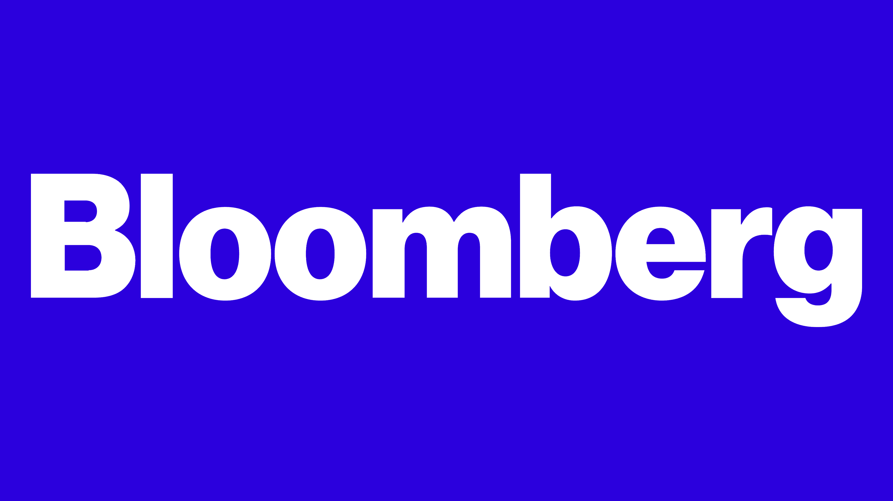

Experience

Jun 2026 – PresentTech Fellow (TIP101/102/103 + AI101)
CodePath
- Scaled technical mentorship across 4 concurrent cohorts, supporting 1000+ engineers-in-training weekly in algorithm design, AI-assisted workflows, and production-oriented problem solving.
- Performed 100+ debugging and code-review interventions, applying systematic error analysis and computational reasoning to improve solution correctness and accelerate iteration cycles.

Jan 2026 – May 2026AI Engineering Extern
Bloomberg
- Building an ingestion pipeline that converts complex legal cases into facts, enabling reliable retrieval and modeling.
- Training model to create case timeline interactive graph, linking entities so timeline is trustworthy for analytics.
 2025 – Present
2025 – Present
AI Software Engineer Intern
General Electric Appliances
- Implemented Oracle chatbots, 24/7 support, cutting manual service by 30%, estimated saving $100K+ yearly.
- Built LLM conversation flows, boosting response accuracy to 97%+ and cutting resolution time from 4min to 1min.
- President of 200+ intern cohort, managing professional development, volunteering, and communications committees.
May 2024 – Aug 2024
Data Science Intern
Alnylam Pharmaceuticals
- Developed a live R Shiny application to visualize complex biological data, improving accessibility for engineers.
- Utilized pins with Posit Connect to create a real-time data update pipeline.
- Automated data extraction and processing with Python win32com.client for SAS macro integration.
Jul 2023 – Dec 2025
Data Structures Teaching Assistant
University of Massachusetts Amherst
- Conducted 2 weekly sessions for 500+ students across 5 semesters, vastly enhancing grades through tailored support.
- Developed and presented a catalog of 80+ worksheets aligned with curriculum, reaching 2000+ downloads each term.
- Hosted 15 exam reviews (2 hrs each) for 1000+ live attendees; attendees achieved 20% higher exam grades.
Jul 2023 – May 2024
Research Assistant - Human Computer Interaction
University of Massachusetts Amherst
- Conducted 2 weekly sessions for 500+ students across 5 semesters, vastly enhancing grades through tailored support.
- Developed and presented a catalog of 80+ worksheets aligned with curriculum, reaching 2000+ downloads each term.
- Hosted 15 exam reviews (2 hrs each) for 1000+ live attendees; attendees achieved 20% higher exam grades.